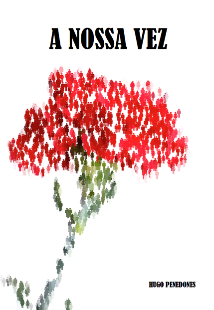

About me
I am a Machine Learning engineer and researcher, with a particular interest in Physical AI, AI4Science and
Reinforcement Learning. In the past I co-founded inductiva.ai, a
cloud-HPC platform for engineers, and I was one of the initial team members of the AlphaFold project at
Google DeepMind. Prior to that, I worked in the Query Formulation
team at Microsoft Bing and did research in Machine Learning and Computer
Vision at Idiap Research Institute and
École Polytechnique Fédérale de Lausane, both in Switzerland. I did my
undergraduate studies in Informatics and Computing Engineering at FEUP, in
Portugal, where I am originally from.
Blog
"Live as if you were to die tomorrow. Learn as if you were to live forever."
Mahatma Gandhi
Check out my blog where I share thoughts and ideas and things I am learning about
at each moment. Here are some recent and old highlights:
The Future of AI is Physical: Simulation is Key
2025
Programming Principles
2023
The AI set of functions
2010
Vapnik's picture explained
2009
Generating All Possible Images
2008
All Blog Posts →
Podcast interviews
Podcast 45 graus with José Maria Pimentel, 2025 (in Portuguese)
Bitalk podcast, Nov 2024 (in Portuguese)
Round Table discussions
Deep Learning Sessions Portugal, 2023
Deep Learning Sessions Portugal, 2022
Talks
Machine Learning for Science and Engineering Summer School, 2025
Deep Learning for NIR Chemometrics workshop, University of Algarve, 2024
The Science Circle, hosted by Jousef Murad, 2022
Publications
"Truth is what stands the test of experience."
Albert Einstein
Main publications are listed below, but see also my Google Scholar profile for
an up to date list.
AlphaFold 1 / Computational Biology
Nature
Improved protein structure prediction using potentials from deep learning
Andrew W Senior, Richard Evans, John Jumper, James Kirkpatrick,
Laurent Sifre, Tim Green, Chongli Qin, Augustin Žídek, Alexander WR Nelson, Alex Bridgland, Hugo Penedones,
Stig Petersen, Karen Simonyan, Steve Crossan, Pushmeet Kohli, David T Jones, David Silver, Koray
Kavukcuoglu, Demis Hassabis
Nature journal, 15 Jan 2020
Protein structure prediction using multiple deep neural networks in the 13th
Critical Assessment of Protein Structure Prediction (CASP13)
Andrew W Senior, Richard Evans, John Jumper, James Kirkpatrick, Laurent Sifre,
Tim Green, Chongli Qin,
Augustin Žídek, Alexander WR Nelson, Alex Bridgland, Hugo Penedones, Stig Petersen, Karen Simonyan, Steve
Crossan, Pushmeet Kohli, David T Jones, David Silver, Koray Kavukcuoglu, Demis Hassabis
Proteins: Structure, Function, and Bioinformatics, 2019
Reinforcement Learning
NeurIPS
Hugo Penedones, Carlos Riquelme, Damien Vincent, Hartmut Maennel, Timothy Mann,
André
Barreto, Sylvain Gelly, Gergely Neu
NeurIPS, December 2019
H. Penedones, D. Vincent, Hartmut Maennel, S. Gelly, T. Mann, A. Barreto
July 2018
T. Mann, H. Penedones, S. Mannor, T. Hester
December 2016
AI & Numerical Simulation
Rodrigo Valério, Hugo Penedones, Luís Sarmento
6th FOAM@Iberia Conference, Oct 2024
Luís Sarmento, Hugo Penedones, Sérgio Santos, Paulo Barbosa
COCE 2024, Valencia, Spain, Nov 2024
Bruno Alves Ribeiro, João Alves Ribeiro, Hugo Penedones, Luís Sarmento, Jorge
Belinha, Miguel Anibal Bessa, Sérgio Tavares, Faez Ahmed
Workshop on Machine Learning for Materials, ICLR 2023
Computer Vision
H. Penedones, R. Collobert, F. Fleuret, D. Grangier
Idiap Research Report, 2011
H. Penedones, F. Fleuret
Idiap Internal Research Report, 2009
Time Series
H. Penedones, B. Sousa, A. Donati, J. Martinez-Heras
SpaceOps 2008 Conference Proceedings, Heidelberg, Germany
Book
"Courage is not the absence of fear. It is acting in spite of it."
Mark Twain

In 2011, I wrote a book in
Portuguese, expressing my views of the world. In a collection of very small chapters, I touch a wide range
of
topics, such as: democracy, economy, education, entrepreneurship, transparency, sustainability, peace, etc.
If you are interested, you can read the full book in digital formats for free, or order a
paperback
copy.
Code
"What I cannot create, I do not understand."
Richard Feynman
"Write programs that do one thing and do it well. Write programs to work
together."
Doug McIlroy
I enjoy building tools and exploring interesting problems through code. Here are some of my public projects
on GitHub:
Convolutional Neural Networks for handwritten digit recognition using
Torch7 and Lua.
A Torch metrics package for evaluating machine learning models. Includes
implementations of various performance metrics commonly used in ML.
K-d tree implementation in C++ for efficient nearest neighbour search in
multi-dimensional spaces.
Machine learning algorithms implemented in C++. A collection of ML
algorithms from scratch for educational and research purposes.
Data structures and algorithms useful for programming competitions. A
collection of competitive programming utilities and problem-solving patterns.
Simple particle filter tracker in C++. Implementation of particle
filtering for object tracking in computer vision.
A fast Sudoku solver implemented in C with a Python wrapper. Demonstrates
efficient constraint satisfaction problem solving.
Interactive, zoomable fractals using PyGame. Explore the beauty of
mathematical fractals with real-time rendering.